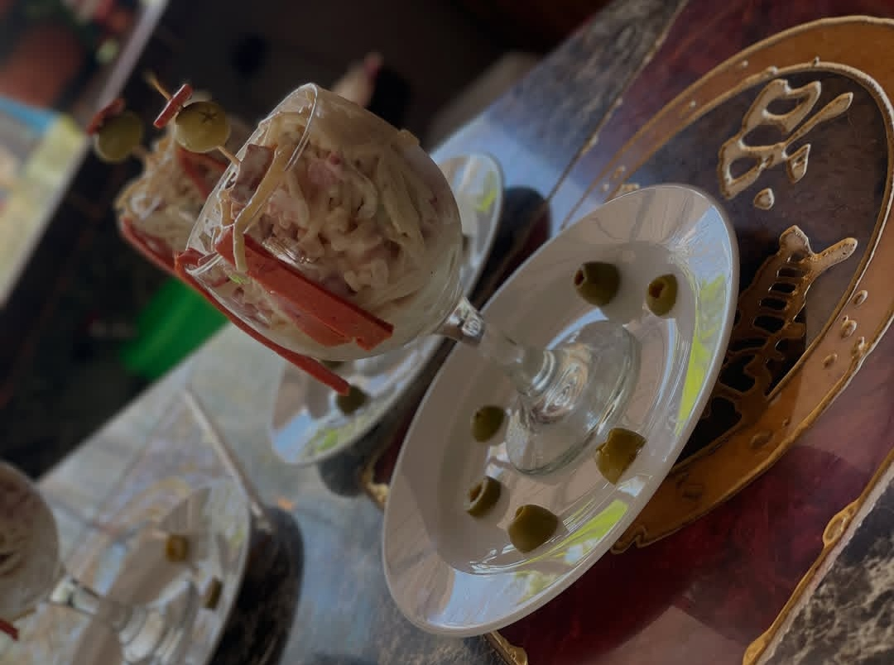

👨🏻🍳🍽️ En Cafetería Paraíso del Sabor, te invitamos a disfrutar de una experiencia culinaria única donde la tradición cubana se encuentra con la creatividad. Desde nuestros deliciosos entremeses hasta nuestras irresistibles pizzas y pastas, cada plato está preparado con amor y los mejores ingredientes. No olvides dejar espacio para nuestros postres caseros y refrescantes bebidas que complementarán tu comida. 🖤🩶🤍 ¡Ven y descubre el sabor del paraíso! 🌴✨
Nuestras Bebidas
El Local